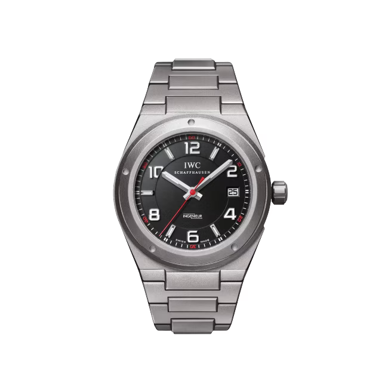

THE INGENIEUR WATCHES COLLECTION
- 1955
- -
- 1967
- 1976
- 1982
- 1989
- 2005
- 2013
- 2017
- 2023
-
1955
With the ‘Ingenieur’, the engineers at IWC were determined to build not only a watch that was highly precise but also one that was very protected. The heart of the Ingenieur, with its highly functional design, is its extreme robustness which includes the reliable screening from magnetic fields, shock protection and its ability to be watertight.
Ingenieur Reference 666 -
DESIGN HIGHLIGHTS
-
1967
During 1967, the new Reference 866 was launched. This was the second generation of the watchmaking icon from Schaffhausen. It mostly retained the basic concept of a rugged, water-resistant and absolutely antimagnetic watch in a round case, but it had a fresher, sportier and more contemporary touch with different dials and hands.
Ingenieur Reference 866 -
1976
In 1976, the appearance of the Ingenieur changed significantly. The designer Gerald Genta gave it a completely new look and designed the Ingenieur SL in a sporty steel case. Today, it is still one of the greatest design innovations by IWC.
Ingenieur SL Automatic -
1982
Starting in 1982 the pocket watch - Ingenieur SL (Ref. 5215) combined the classical pocket watch IWC calibre 9520 with typical features of the Ingenieur. Due to its soft iron inner case and soft iron dial, the watch was antimagnetic up to 40,000 A/m. The pocket watch was also water resistant to 3 atm. Very few of these collectible timepieces were made.
Ingenieur SL Pocketwatch -
1989
The Ingenieur 500,000 A/m was engineered to withstand any magnetic field. The balance spring was made of a niobium-zirconium alloy, which is extremely difficult to work with. The watch was tested several times in magnetic resonance scanners and withstood an incredible 3.7 million A/m. Back then, the watch set a new world record for antimagnetic watches.
Ingenieur 500’000 A/m -
2005
In 2005, the successful relaunch of the Ingenieur in the shape of the Reference 3227 brought the Ingenieur legend back to a new and dynamic life. To honor the partnership with Mercedes-AMG, IWC launched this special piece.
 Ingenieur Automatic AMG -
2013
The 2013 Ingenieur watch collection had been completely overhauled and came with high complicated watch making. One extraordinary highlight was the Ingenieur Constant-Force Tourbillon (Ref. 5900) in its platinum and ceramic case. Its patented constant-force mechanism is integrated in the tourbillon and guarantees an extremely precise rate.
Ingenieur Constant-Force Tourbillon -
2017
In 2017, IWC returned to the iconic round design of the first generation of Ingenieur watches from the 1950s and 1960s. The flagship of the new collection featured a digital perpetual calendar, a chronograph function and a 45-millimetre case made from 18-carat 5N gold.
Ingenieur Perpetual Calendar Digital Date Month -
2023
Introduction of the Ingenieur Automatic 40, a newly engineered automatic model that reflects the bold aesthetic codes of Gérald Genta’s Ingenieur SL, Reference 1832, while meeting the highest standards regarding ergonomics, finishing, and technology.
Ingenieur Automatic 40